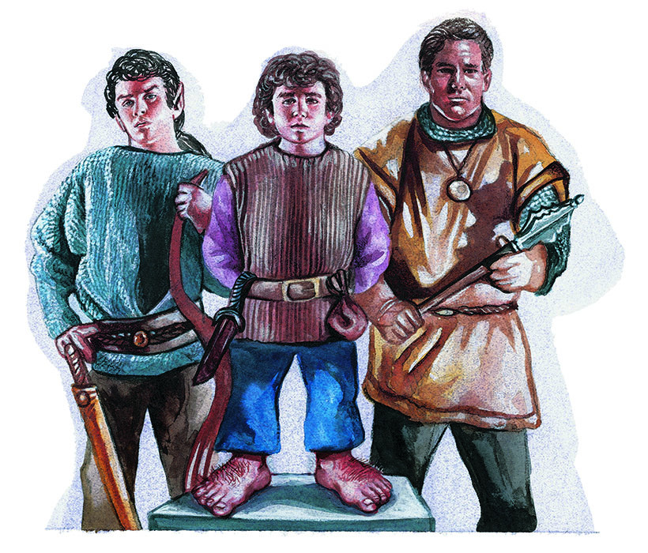

半精灵

半精灵（Half-Elves）
半精灵是最常见的混血种族。精灵、人类、半精灵之间的关系被如此定义：1）祖先是人类和精灵的人，要么是人类要么是半精灵（精灵的祖先只能是精灵）。2）如果某人的人类祖先比他的精灵祖先多，那么他是人类；如果某人的精灵祖先们和人类祖先同样多或者比人类祖先更多，那么他是半精灵。
半精灵的外貌通常很像他们的精灵父母，俊美的他们继承了亲族的每个优良特征。他们能够自如地与其他种族打成一片。半精灵只比一般的精灵（平均5英尺6英寸）略高，体重约150磅。他们的寿命约为160年。他们并不具备精灵所有的能力，也没有人类那能够无限地提高等级的可塑性。最后，在一些文明程度较低的国家，半精灵受到人们的怀疑和迷信。
一般来说，半精灵拥有着人类的好奇心、创造力和野心，也拥有着精灵们细致的感官、对大自然的爱、以及卓越敏感的艺术品位。
半精灵之间并没有形成社会，但我们能在人类的城镇和精灵们的村庄找到他们。人类和精灵对半精灵的看法从感兴趣到彻底的偏见都有。
半精灵是所有亚人种族中能够选择最多职业的种族。他们往往能够成为很好的德鲁伊和游侠。半精灵可以选择成为一个牧师、德鲁伊、战士、游侠、巫师、专精法师、盗贼或吟游诗人。此外，半精灵还可以选择以下的兼职组合：牧师（或德鲁伊）/战士、牧师（或德鲁伊）/战士/巫师、牧师（或德鲁伊）/游侠、牧师（或德鲁伊）/巫师、战士/巫师、战士/盗贼、战士/巫师/盗贼，以及巫师/盗贼。半精灵必须要遵守兼职角色的相关规则。
半精灵没有自己的语言。他们与其他种族的广泛接触使他们可以选择以下（和其他任何DM所允许的）语言：通用语、精灵语、侏儒语、半身人语、地精语、大地精语、兽人语和豺狼人语。他掌握语言的实际数量受限于玩家角色的智力（详见表格4）或他所分配给语言的熟练槽（如果使用该可选规则）。
半精灵角色对睡眠术和所有附魔类的法术有30%的抗力。
半精灵的热感视觉能使他们看穿60英尺的黑暗。
就像精灵一样，密门和隐藏门同样也很难瞒过半精灵。半精灵有六分之一的机会（投掷1d6得到1）能够发现距离他们10英尺内的隐藏门（一扇被窗帘所遮蔽的门等）。如果半精灵角色主动去寻找这类门，那么他有三分之一的机会（投掷1d6得到1或2）找到一扇密门，有二分之一的机会（投掷1d6得到1、2或3）找到一扇隐藏门。